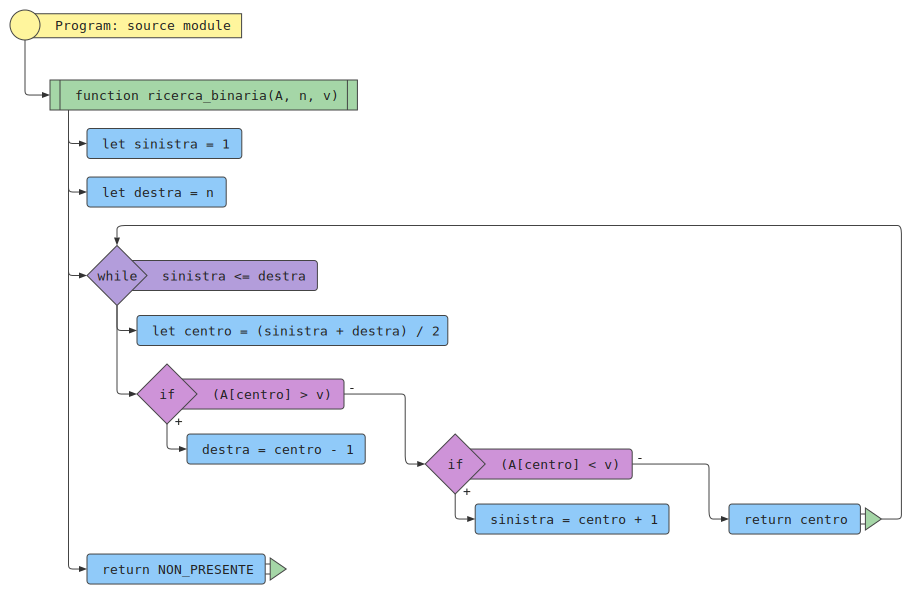
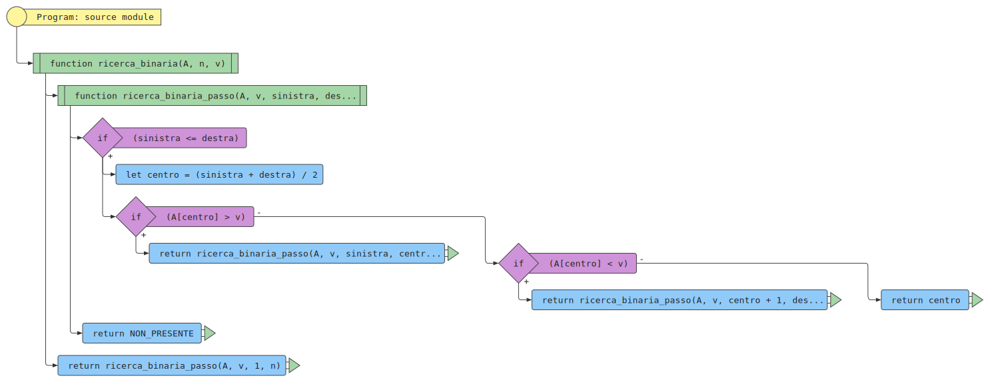

Determinare se un valore \( v \) dato è presente in una sequenza ordinata \( A \) di \( n \) valori. Se il valore \( v \) è presente, restituirne la posizione.
Una sequenza si dice ordinata se, per ogni coppia di valori adiacenti, quello di sinistra è non maggiore di quello di destra. Formalmente, una sequenza \( A = [a_1, a_2, \ldots, a_n] \) è ordinata se \( a_i \leq a_{i+1} \) per \( i = 1, 2, \ldots, n - 1 \).
Una sequenza ordinata \( A \) di \( n \) valori, \( A = [a_1, a_2, \ldots, a_n] \) e un valore \( v \).
Un indice \( i \) tale che l’elemento in posizione \( i \)-esima della sequenza, \( a_i \) sia uguale a \( v \), oppure un valore speciale che indica che \( v \) non compare nella sequenza \( A \).
La sequenza \(A = [1, 2, 3, 5, 7, 11, 13, 17] \) di \( n = 8 \) elementi e il valore \( v = 5 \)
L’indice \( i = 4 \) tale che \( a_4 \) è l’elemento \( 5 \).
L’algoritmo di ricerca binaria consiste cercare un dato valore al centro di un intervallo che potrebbe includerlo. Se il valore dato è al centro, allora restituisce l’indice, altrimenti se il valore cercato è minore del valore nel centro ripete la ricerca nella sotto-sequenza a sinistra del centro, altrimenti nella sotto-sequenza di destra.


Numero confronti: 1
Numero confronti: \( p \) tale che \( 2^{p-1} < n \leq 2^p \)
Numero confronti: \( p \) tale che \( 2^{p-1} < n \leq 2^p \)